Skills: Circuit analysis, Debugging, Lab Documentation, Lab Equipment: Oscilloscope, Multimeter, Function Generator
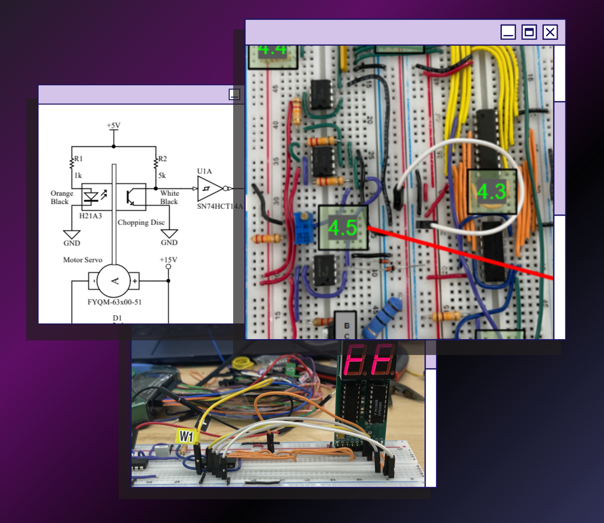
A feedback control circuit to control the RPM of a motor

During the previous weeks of our lab course, we learned about basic circuitry skills; debugging, using lab equipment (primarily the Analog Discovery 2), working with electronic components like diodes, transistors and op-amps.
With this knowledge built up, we were tasked with constructing the following circuit:
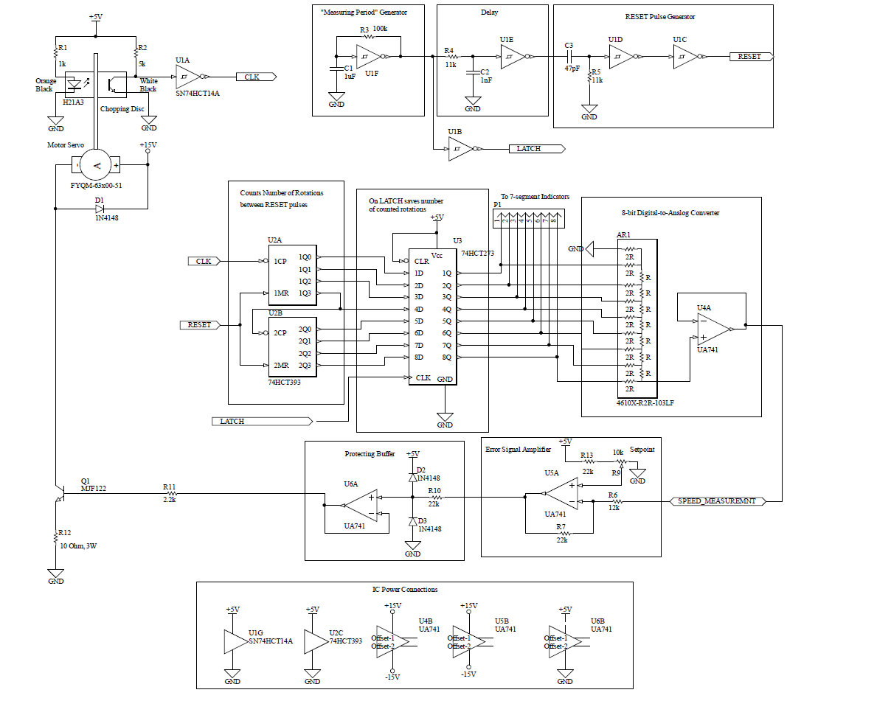
A brief description of the operation:
The motor (top-left of schematic) has a disc attached to it with a ten equidistant slits. These holes allow light from an LED to shine on a phototransistor during rotation, creating a clock (CLK) pulse dependent on the motor speed. A counter counts how many CLK pulses occur between the RESET pulse.
Just before each RESET pulse, an 8 bit D-latch DAC stores the counter output and converts it to an analog signal using an R2R ladder. The resulting analog signal gets compared to an analog voltage reference signal in an error-signal amplifier, which then controls the current to the motor through a power transistor.
We will divide circuit into 5 main components and examine each in more depth with some snippets from my final lab report submission:
The first part of the circuit we were tasked with building was the latch and reset generator, square wave oscillators that lets the D-latch store and reset counter outputs:

Here, we use a Schmitt Trigger inverter and RC setup to generate a square wave pulse that we use as our "measuring period", or CLK pulse for the latch that stores our counter output.
Oscilloscope reading using AD2:
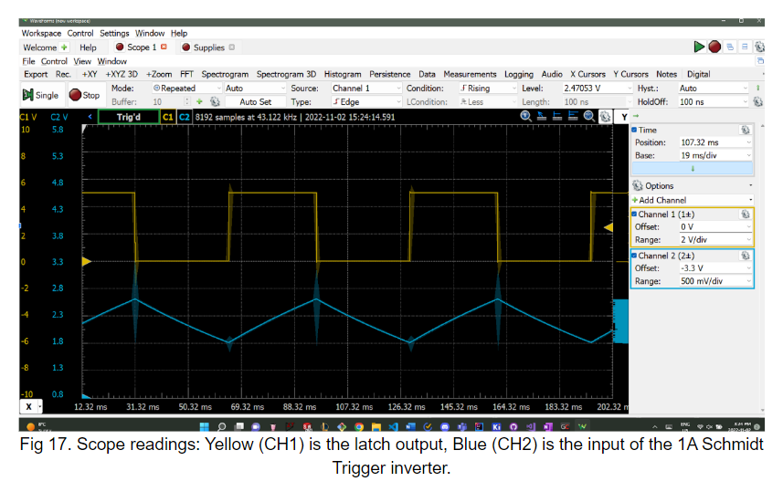
The input to our Schmitt Trigger is the periodic charge/discharge cycle of a capacitor in an RC circuit, which is then 'squared up' by the Schmitt Trigger due to hysteresis and inverted with another Schmitt Trigger (U1B); the voltage as the capacitor begins to discharge meets the 'low' threshold of the trigger, thus causing a 1 to 0 state change (high to low) in our output. Conversely, when the capacitor begins to charge again, we see a 0 to 1 state change. This is later connected to the CLK input of our D-latch.
Now our output from a) is fed into the latch and a delay circuit. This uses another RC circuit, as the square wave output charges and discharges a smaller capacitor and introduces a time delay relative to the original input. The larger the time constant (RC), the larger the time delay. Our output from part b) is a square pulse (thanks to another Schmitt Trigger) that has been shifted.
Oscilloscope reading of the input square wave (blue) and the output square wave (yellow):
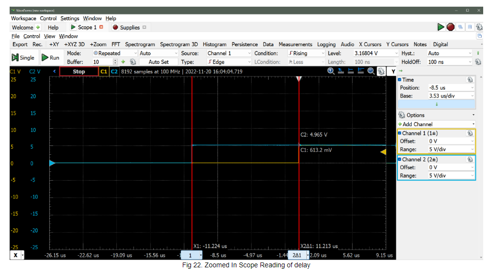
A delay of around 11 microseconds is observed during discharge; the left cursor covers the input rising edge while the right cursor covers the output rising edge.
The calculations for expected delays during discharging and charging can be seen here:
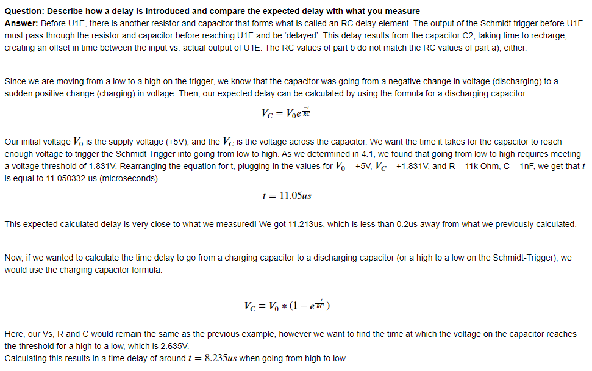
The delayed square wave is passed through another RC circuit, this time in a high-pass filter formation (rather than low-pass, as previously seen). The capacitor this time has a value in Picofarads, making for a very small time constant and quick charge/discharge cycles.
Only at the rising edge of the delayed square wave is there a pulse, as the capacitor charges quickly, crossing the trigger threshold and changing states, before discharging quickly and changing states again, creating this small 'pulse' shape. This is originally a falling-> rising -> falling edge, but the second Schmitt Trigger reverses the polarity of the output to match our original latch polarity, and we get our reset pulse.
Oscilloscope reading of our original latch signal (undelayed) in blue, and the reset pulse in yellow. Notice the 11 microsecond delay introduced from b).
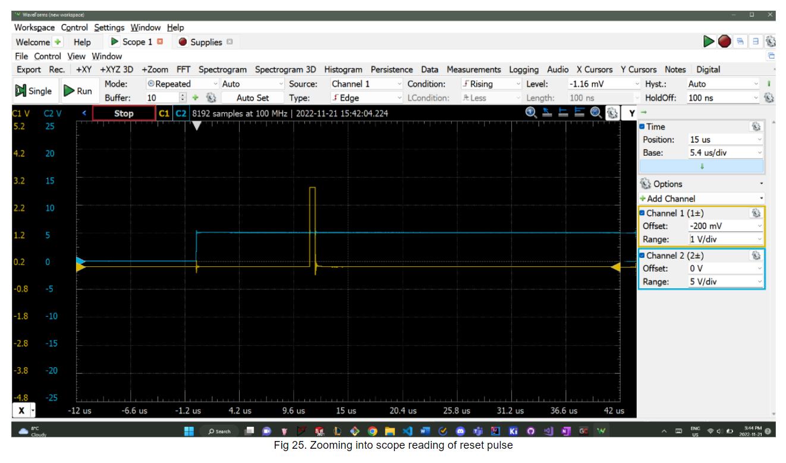
The circuit / schematic I made for the latch and reset generator:
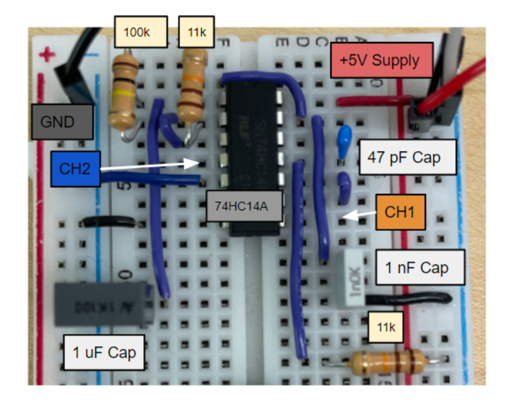
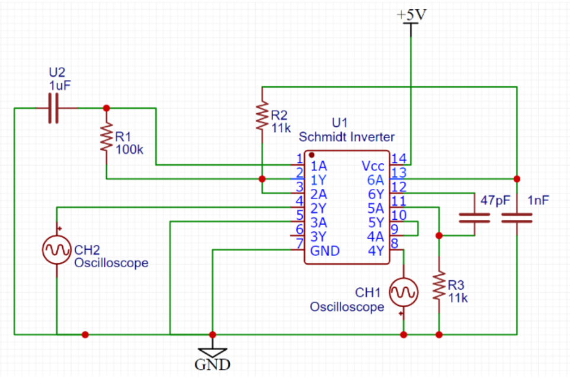
This portion of the circuit counts the number of clock pulses between reset pulses, storing the result before converting it to an analog voltage value.
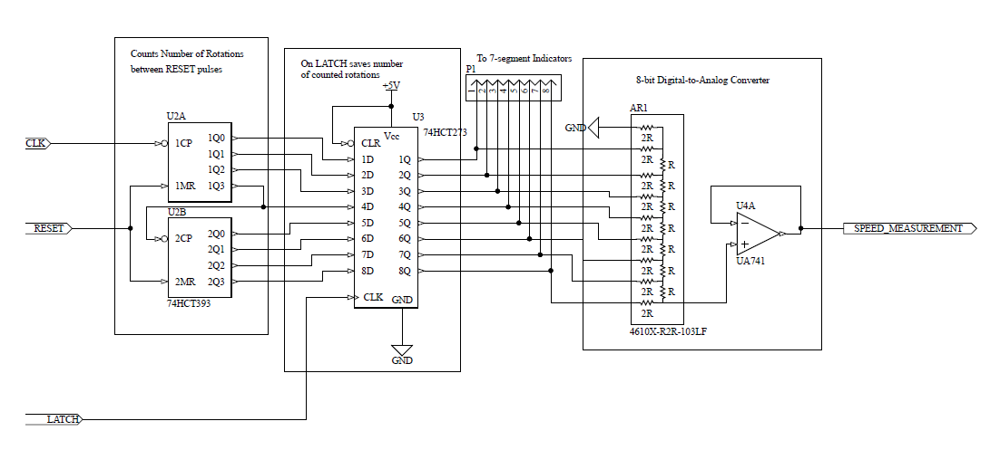
First we built an 8-bit counter that counts from 0 to 255 (2^8 - 1), testing its functionality with an input square wave signal from the AD2 and 7-segment display. In the final circuit, it counts the number of rotations during one measurement period and sends it to the D-latch to be stored.
Constructed circuit and schematic:
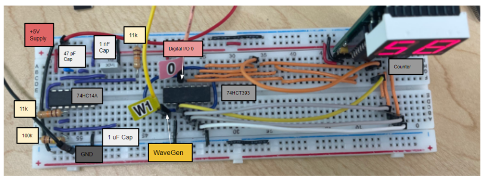
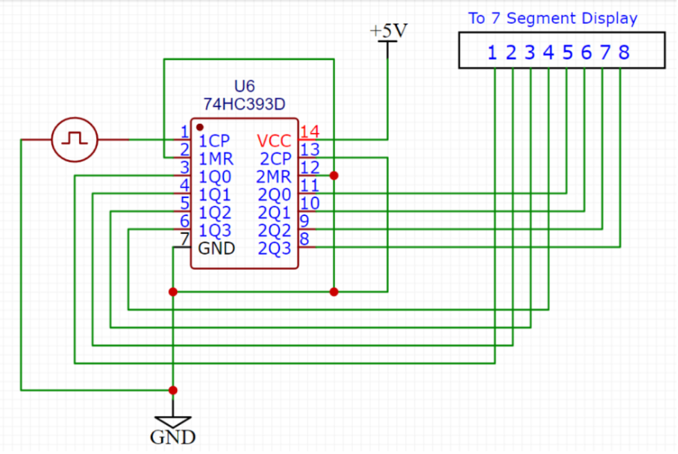
The D-latch saves the count from our counter and sends the information to the 7-segment display and DAC. The DAC, consisting of an R2R ladder and buffer, converts the digital signal to an analog voltage reading that we can use in the rest of our circuit!
R2R ladders were explored in a previous lab, where we input a series of incrementing binary inputs to output an analog sawtooth wave. Each binary value can be said to correspond to some analog voltage, relative to whatever reference voltage is set. Our DAC will produce a constant voltage/flat analog signal for a constant speed reading.
The buffer in the DAC helps to protect against the effects of loading from the rest of the circuit, as it mirrors the voltage and isolates its input side from its output side.
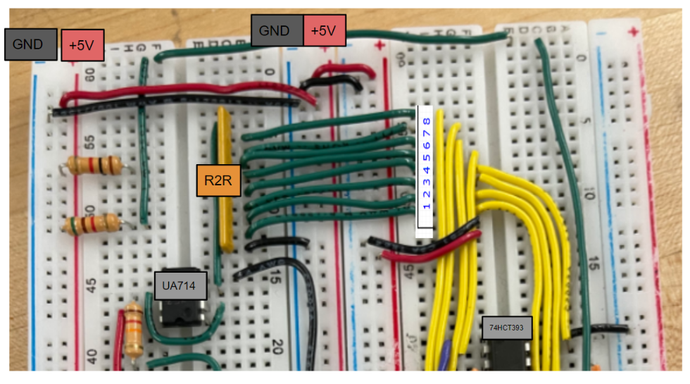
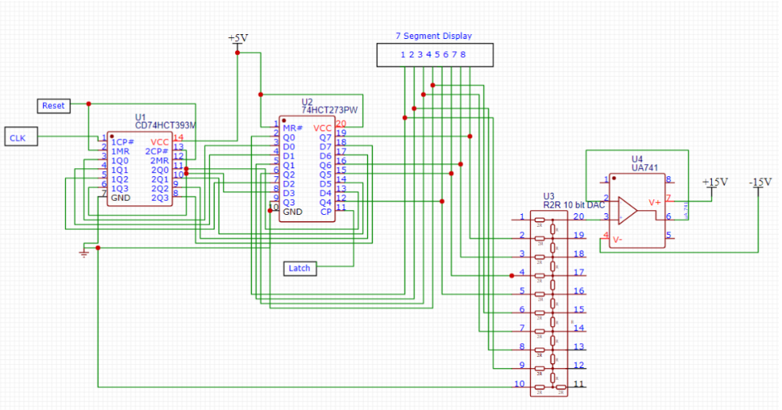
Note: The way I have wired the counter will result in a display with reversed table values (01 is actually 10, and vice versa).
With much of the circuit complete, we began to set up the motor itself, with the following circuit (by passing the power transistor in the final circuit as we have not yet set up the error amplifier and buffer)
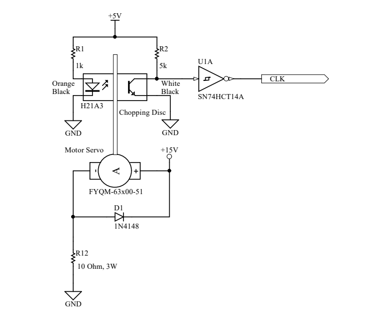
I first wired the circuit without including the motor, testing the phototransistor operation when manually spinning the disc.
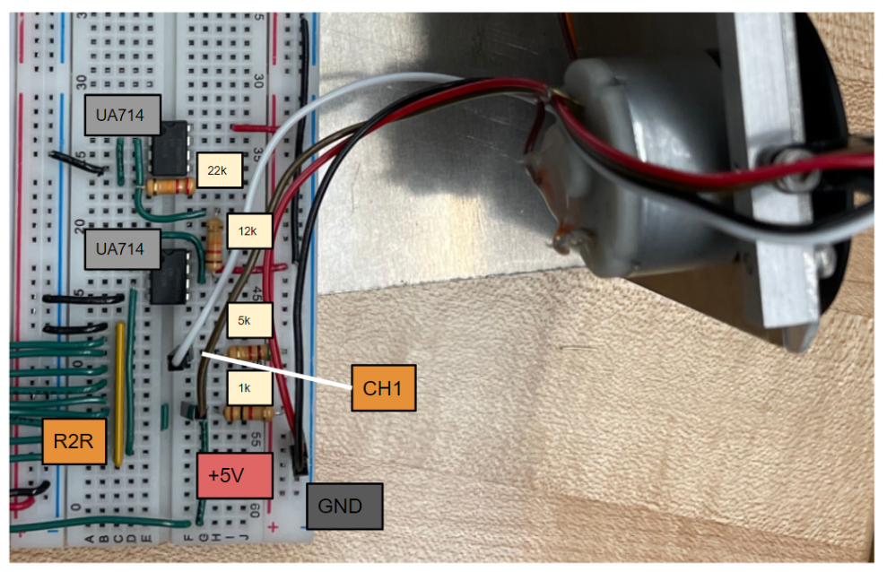
Oscilloscope reading of the phototransistor output as I manually spun the disc at different rates:
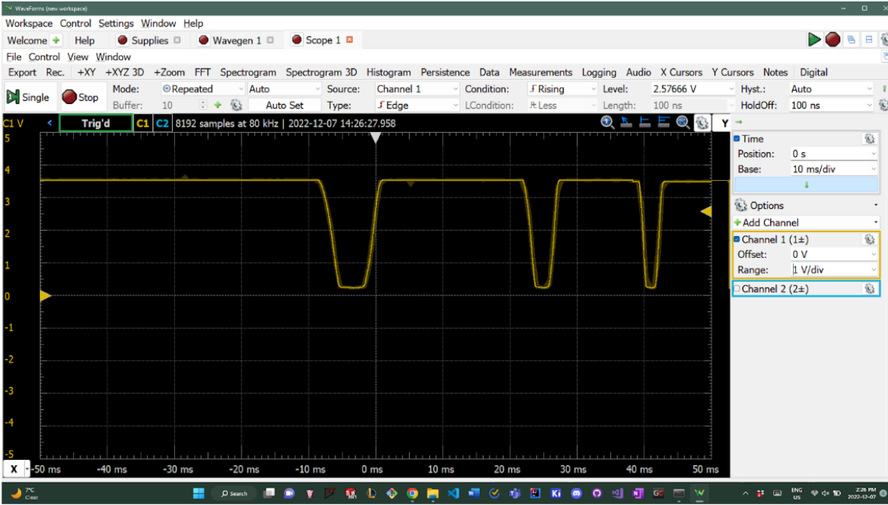
These are dips rather than pulses, so an inverter is used to 'flip' the signal before being sent to the counter as the CLK pulse!
With the phototransistor confirmed to be working, I wired the rest of the motor up, let it run with a constant speed and probed the new output with the oscilloscope:
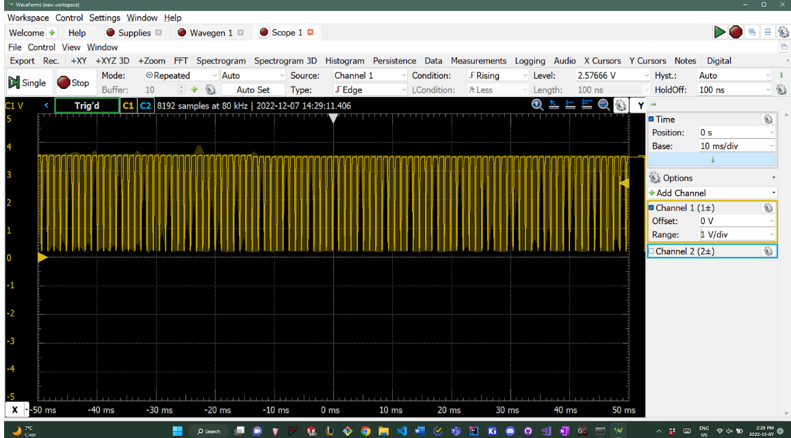
Looking as expected, so we can move on to the final section of our circuit!
We can finally complete the feedback circuit by assembling the error signal amplifier, buffer and controlling power transistor, such that the speed of the motor can be controlled by a potentiometer.
The circuit schematic for this section:
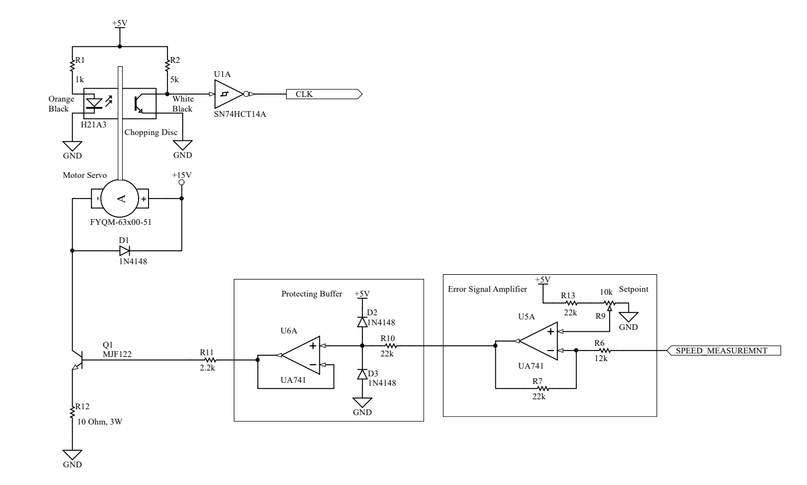
The circuit for the error signal amplifier compares the analog voltage we obtained from our DAC to a stable reference voltage that is controlled by a potentiometer. It outputs the difference between the reference/potentiometer voltage with a gain dependent on the value of the resistors in the inverting input and the non-inverting input. By varying resistance with the potentiometer, we can alter the value of the non-inverting input, thereby changing our error voltage/output.
Our amplified error signal is then fed into a protecting buffer, which uses two diodes to keep the range of voltages between 0V/GND and 5V. For inputs within the range, the diodes are reverse-biased and do not conduct. Anything above 5V causes the diodes to become forward biased, effectively shorting themselves as they allow excess current to pass through them. The same logic is applied when we have voltages below 0V, so the output is limited to the threshold voltage of the diodes.
The reason we need this buffer is to protect the MJF122 power transistor, a BJT that has a maximum Base-Emitter voltage of 5V.
With these components in place, the circuit is complete!
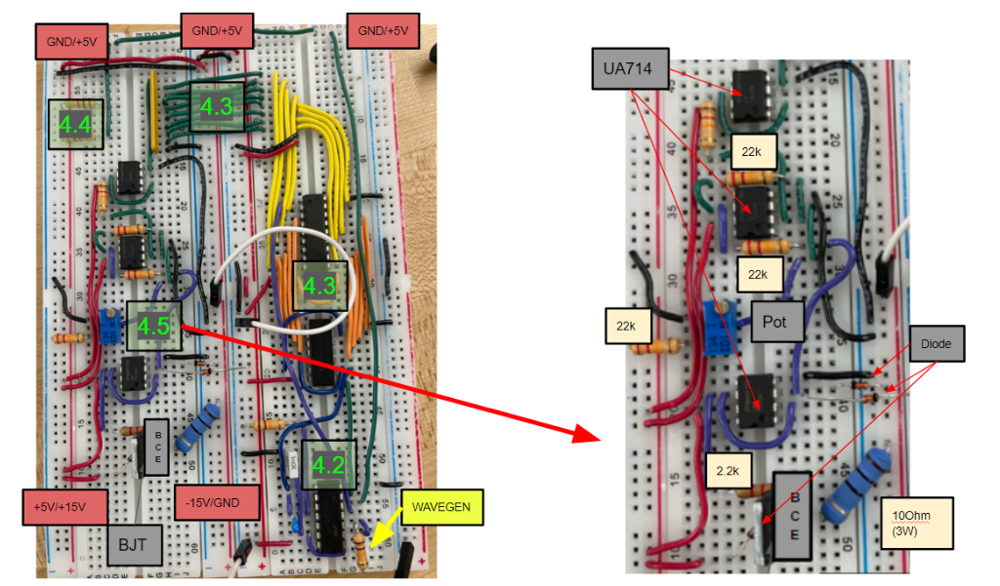
The final question in our lab report involved finding the relationship between the voltage set, what RPM that voltage produces and what value is displayed on the 7 segment display, then finding the maximum RPM.
To show the relationship between the set voltage and the 7 segment display, I used the potentiometers variable resistance to vary the amount of voltage going across the resistor at set increments to obtain a set of data points.
I started by finding the lowest voltage across the potentiometer that could cause the motor to rotate.
Oscilloscope reading of potentiometer voltage:
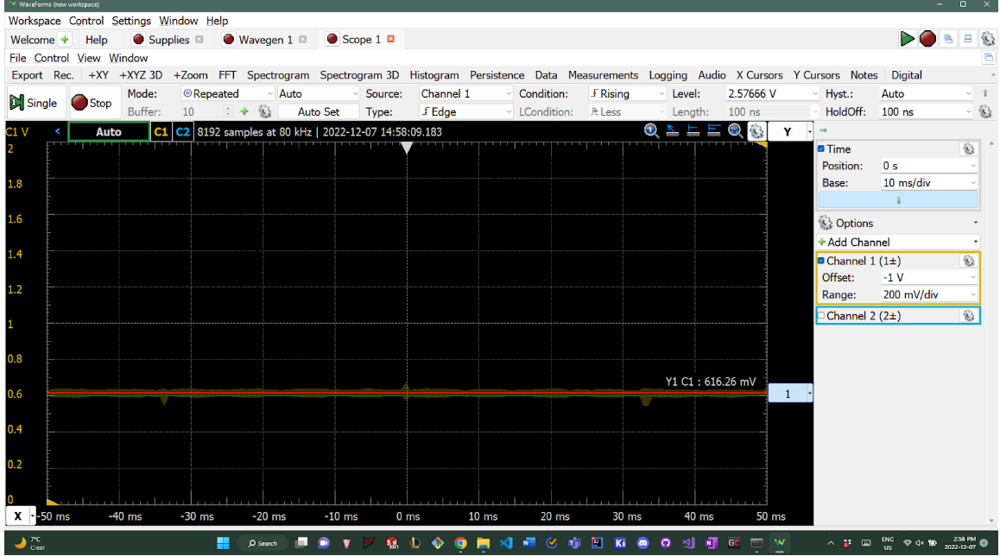
Then, I manually incremented the voltage by 100mV, moving the cursor then adjusting the potentiometer and reading the 7-segment display. After collecting the data, I obtained the following table:
Note that the display reading has been converted to the proper place value (swapped, since mine are orginally inverted). There are 2 values for each volage level separated by a slash, since it was always flickering between two readings. I then took the average of the two hex values (we used mod 16 counter) and converted them to decimal to plot as a graph later on).
| Voltage (mV) | Display | Avg in decimal |
|---|---|---|
| 620 | 2/3 | 2.5 |
| 720 | A/b | 10.5 |
| 820 | 12/13 | 18.5 |
| 920 | 19/1A | 25.5 |
| 1020 | 20/21 | 32.5 |
| 1120 | 29/2A | 41.5 |
| 1220 | 30/31 | 48.5 |
| 1320 | 38/39 | 56.5 |
| 1420 | 3E/3F | 62.5 |
| 1520 | 42/43 | 66.5 |
| 1590 (MAX) | 43/44 | 67.5 |
Plotting these results on excel and finding a best fit line, we get the following:
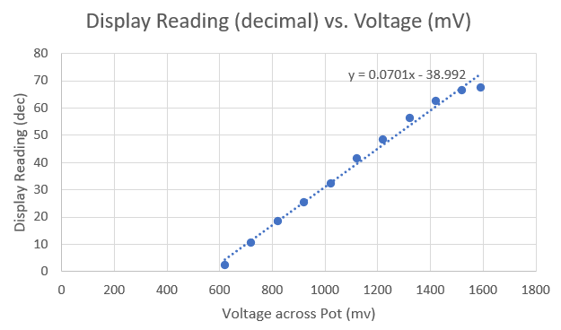
This tells us the relationship between the set voltage and the 7segment display are relatively linear! The display is roughly proportional to around 0.0701* the set voltage (in mV).
To find the relationship btwn RPM and the display/set voltage, we must derive a formula based on the way our circuit operates. Firstly, the way we know our disc rotates is through the phototransistor, which sends signals everytime light interacts with it. This light hits it by travelling through the slit on the disc. However, there is more than one slit on the disc. Counting it shows that there are exactly 10 (apologies as I do not have a good photo) slits on the full disc.
If we rotate the disc fully once, we should expect the transistor to have reacted 10 times, as light will have travelled through each slit once. This means that for every rotation, we expect 10 signals.
But how do we measure the frequency of the rotations? This lies in our measuring period generator, or our latch output from **4.2**. If you recall, we set it (using the wavegen) to a frequency of 15Hz. This means that we take measurements eevery 1/15s. So for every measurement period, given we know how many times the disc has rotated, we will know the exact RP of our motor.
Putting this into a formula, we get:
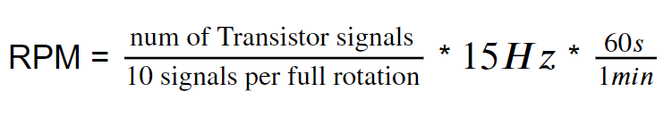
The number of signals received is equivalent to the decimal value of our 7 segments display. With this in mind, we receive our full table:
| Voltage (mV) | Display | Avg in decimal | RPM |
|---|---|---|---|
| 620 | 2/3 | 2.5 | 225 |
| 720 | A/b | 10.5 | 945 |
| 820 | 12/13 | 18.5 | 1665 |
| 920 | 19/1A | 25.5 | 2295 |
| 1020 | 20/21 | 32.5 | 2925 |
| 1120 | 29/2A | 41.5 | 3735 |
| 1220 | 30/31 | 48.5 | 4365 |
| 1320 | 38/39 | 56.5 | 5085 |
| 1420 | 3E/3F | 62.5 | 5625 |
| 1520 | 42/43 | 66.5 | 5985 |
| 1590 (MAX) | 43/44 | 67.5 | 6075 |
This gives us our maximum RPM of around 6075 RPM and thus concludes our lab!